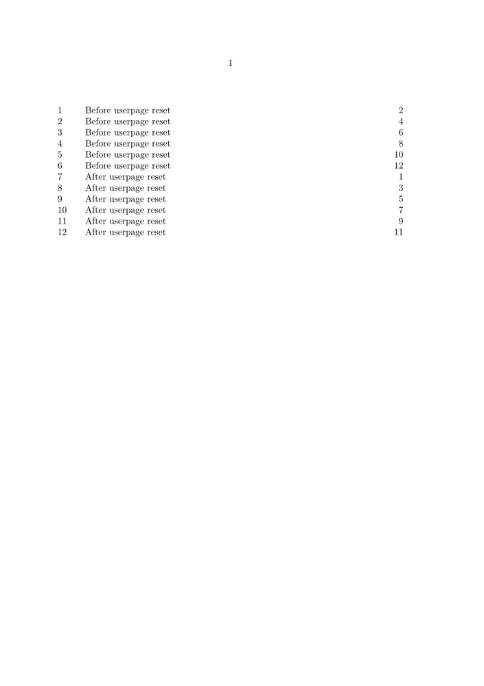

Contents
Summary
The command \resetuserpagenumber is used for resetting the userpage counter, and thus the displayed page number.
Description
Examples
Example 1
-
\usemodule[ipsum] \starttext \placecontent \pagebreak \dorecurse{6}{\section{Before userpage reset} \dorecurse{6}{\ipsum}\pagebreak} \resetuserpagenumber \dorecurse{6}{\section{After userpage reset} \dorecurse{6}{\ipsum}\pagebreak} \stoptext
- 